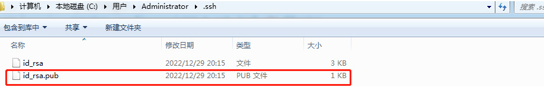

章节目录:
git是目前世界上最先进的分布式版本控制系统
版本控制系统:[举例]设计师改稿{需要包含:版本/文档名/操作用户/日志/修改时间}
版本控制是一种记录一个或若干文件内容变化,以便将来查阅特定版本修订情况的系统.
手动控制版本/软件自动控制版本
两者区别:
git是一个分布式版本控制系统,简单的说其就是一个软件,用于记录一个或若干文件内容变化,以便将来查阅特定版本修订情况的软件.
github(https://github.com/)是一个为用户提供git服务的网站,简单说就是一个可以放代码的地方{不过可以放的当然不仅是代码},github除了提供git的web界面外,还提供了订阅、关注、讨论组、在线编辑器等丰富的功能.github被称为全球最大的基友网站.
1.打开github官网,点击右上角"sign up"按钮
2.填写邮箱/密码/用户名,点击"continue",邮件验证/在线验证/Create account.
Skip personalization
说明:我这里直接到这一步界面了,不知道是不是视频问题还是刚注销账号没完全.其实学习视频中还包含:如果不创建组织,直接点击下一步.账户收费情况(免费账户);问卷调查skip this step;验证邮箱是否可用(邮箱找到邮件,点击验证)
官方版本可以在 Git官方网站下载,打开 https://git-scm.com/download/win,然后选择相应的版本即可.
①下载得到安装包并运行
②选择软件安装位置,尽量不要出现中文,或者其他的一些特殊符号.
③选择需要安装的组件,默认即可,直接下一步
④选择使用的编辑器,默认即可,直接下一步
⑤使用方式,默认即可,直接下一步
⑥使用openSSH,直接默认下一步
⑦选择样式,直接默认下一步
⑧配置终端/配置额外选项
⑨配置体验/安装结束,复选框去掉勾选,finish

如何验证有没有安装成功?桌面空白右击,菜单出现git GUI Here和git bash Here的选项,说明git安装成功.
为什么要有暂存区?不能直接从工作区域提交到git仓库吗?举例:"小明买东西"
我们把需要提交到git仓库里面的东西,先临时存在这个暂存区,确定没问题了,一次性将刚才存放在暂存区里面的东西提交到git仓库里.所有操作都临时放在暂存区.
三个区域的两个操作,涉及到相关指令
在整个这三个区域之间的一个切换的话,涉及到的指令是三个基础指令,分别是git status、git commit、git add
这三个区域要配合上面这块文字的注解要做一个理解;
①工作区是指我们对代码的相关的直接的操作
②暂存区是指将已经修改的这个文件先临时放到暂存区里面
③一次性提交的话,提交到git仓库;工作流程从下往上看,这么一个提交方式
了解完git工作流程,现在在本地仓库里面进行git的相关操作
↳本地仓库
什么是仓库呢?仓库又名版本库,英文名repository,我们可以简单的理解成是一个目录,用于存放代码的,这个目录里面的所有文件都可以被git管理起来,每个文件的修改、删除等操作git都能跟踪到.
↳管理仓库的步骤
①在安装好后首次使用需要先进行全局配置
桌面空白右击,点击"Git Bash Here"以打开git命令行窗口,输入以下指令.
$ git config --global user.name "用户名" $ git config --global user.email "邮箱地址"
配置的目的是为了配置当前这个用户名和邮箱
作用:设计稿举例/中间包含用户名;我们在开发的时候,有可能有好多个人去共同的研发一个项目,这个文件了也可能同时或者说先后被多个人所修改.git得知道,你这个修改是哪一个用户改的.因此了,我们在做后续操作之前,必须了,也要先设置好这个用户信息,这个是必须的.
用户名/邮箱建议写gitHub的那个用户名;通过执行打印发现用户名和邮箱设置都是ok的
安装好之后,操作仓库之前,需要做的,用户名让git知道,我们后期的每一步操做是是哪一个用户做的,出于这个目的.
第一步做好之后,在不用换电脑的情况下,或者说你系统不重装的情况下,这个是不需要再做了,做一次就行.
②创建仓库
当我们需要让git去管理某个新项目/已存在项目的时候,就需要创建仓库了.注意；创建仓库时使用的目录不一定要求是空目录,选择一个非空目录也是可以的,但是不建议在现有项目上来学习git,避免出现意外错误(推荐空目录)
注意:为了避免在学习或使用过程中出现各种奇葩问题,请不要使用包含中文的目录名(父目录亦是如此).
1)创建空目录
指令: mkdir pro_git
这样就创建好目录了,或者说是我们的仓库;当然目录的建立除了mkdir还可以是鼠标右键新建文件
2)在命令行中进入我们的项目目录pro_git
指令: cd pro_git
3)git仓库的初始化(目的:让git知道,它需要来管理这个目录)
指令: git init 回车
有了.git隐藏目录文件夹,配合命令行中的提示,git仓库就初始化好了;查看的时候需要显示隐藏文件夹
表现:执行之后会在项目目录下创建".git"的隐藏目录,这个目录是git所创建的,不能删除,也不能随意更改其中的内容.
到这里,git就有了我们计算机上第一个仓库了,这时候就可以项目开发,写代码了,这些属于git本地仓库管理的前面一部分,这部分属于一次性操作,一般我们在做的时候,针对一个项目只需要做一次就好了,用户名/邮箱/仓库建立,一个项目做一次就ok.
在创建好本地仓库后,接下来是git对于仓库的一些操作指令
③git常用指令操作
查看当前状态: git status 添加到缓存区: git add 文件名 提交至版本库: git commit -m"注释内容"
nothing to commit (create/copy files and use "git add" to track)
执行查看当前状态"现在没有任何的提交(我们可以选择创建或者复制文件,然后再用git add这个指令去进行跟踪);简而言之现在可以去写代码了"
在pro_git目录建立readme.txt文件/然后执行git指令
git add提交到暂存区\目前本地git_pro是工作区
说明:git add指定可以添加一个文件,也可以同时添加多个文件
语法1: git add 文件名
语法2: git add 文件名1 文件名2 文件名3 ...
语法3: git add . [代表添加当前目录./,杠可以不写,添加当前目录到缓存区中]
如果不想写文件名,可以直接用语法3,当前目录下的东西很多,也就包含了也要添加的那个文件了.
执行语法1,查看状态,提示改变需要提交了,或者清除这次提交的内容.
提交至版本库git commit -m"注释内容"
注释可以写中文,为了方便你更好的知道我们每次提交都是哪些操作;这个时候文件就提交到本地仓库里面去了.
第一个文件执行完成之后,再创建一个文件index.php;重复刚才的操作流程
这个时候第二个文件indexd.php也被我们提交到仓库里面去了.
如果新建多个文件,只需要我们重复运行这个流程就可以了,但是这个时候注意执行可以语法2或者语法3
git add .
git commit -m"新建了2个文件"
这样pro_git里面的4个文件就全部提交到本地仓库里面去了,后续如果有其他变动,我们都需要执行这样一个操作.
如果修改了index3.php的内容,该怎么提交?
小结:如果说你想一次性操作多个文件,操作完之后执行git add,然后再执行git commit -m"注释内容";再后续对于文件(可以操作1个或多个)操作之后,重复使用git add与git commit指令即可.另git status有需要用到再去用它,非必要使用;此外git add有三种写法,要结合实际情况选择,可以添加一个文件,也可以添加多个文件.
当我们把git对于仓库的操作指令完了之后,现在研究时光穿梭机-版本回退.
版本回退分为两步骤进行操作:
步骤:
①查看版本,确定需要回到的时刻点
指令:
git log
git log --pretty=oneline
②回退操作
指令:
git reset --hard 提交编号[版本号]
git log写作日志,将历史所做的操作,操作的commit/操作的人/操作的时间以及操作的文档都会列出来.
commit 黄色字符串,我们就可以理解成它是某一个时间点提交的序号.只不过这个序号经过特殊编码是这么长的字符串.
commit 9ffb9b87e6aee705fb1c7a34ecd5125247b62c3e (HEAD -> master)
HEAD-->master 当前所处状态,如果想回到之前,只需要找到之前时间点的序号,也就是这个ID号就可以了,然后就可以进行第②步
如上图,git log这是第一个指令执行的结果是显示日志
git log --pretty=oneline 它和第一个指令的区别在于两种指令执行的结果显示效果不一样.第二个执行的结果是oneline一行,一行就是一个时刻;简化了一下,一个是commit id另外一个就是对应的一个注释;说明注释重要性!注释在其他代码里面是可写可不写,但是这一块它提交,没办法确定你想回到的哪个版本号,尽量写好注释.
执行操作①,最终要得到的就是commit ID的字符串,这就是如何查看版本号[提交编号].
git reset --hard 版本号 进行回退,其中的版本号就是上面得到的commit ID的字符串,或者说是提交编号.
案例:利用时光机回到创建好第一个文件readme.txt那个时候.
通过操作发现,的确给我们回到了最初的那个状态,这是我们第一次提交的当时的效果.
如果回到过去,首先查看要回到的时刻,也就是commit ID提交编号,然后再使用第二个步骤的指令git reset --hard 提交编号
回到过去了,我只是想知道我过去某个时刻里面的代码,可能我需要这段文字或者代码;然后我想回到一开始的那个状态,有index.php index2index3的时候,怎么办了?
再次执行指令的时候,它只显示一个版本号.
说明:这个版本号,它只会显示当前和当前之前的,由于我们现在本身就在第一个版本,所以此刻就一个版本号,不会显示之后的版本号,之后的版本号不清楚(由于没发生),那如何回到index2index3的时候?当然不能完全依赖历史记录版本号.
注意:回到过去之后,要想再回到之前最新的版本的时候,则需要使用指令git reflog去查看历史操作以得到最新的commit id.
小结:
a.要想回到过去,必须先得到commit id,然后通过git reset --hard进行回退;
b.要想回到未来,需要使用git reflog进行历史操作查看,得到最新的commit id;
c.在写回退指令的时候commit id可以不用写全,git自动识别,但是也不能写太少,至少需要写前四位字符.{多写的话可以,少写的话可能就出问题了,因为后期了,随着我们提交的次数越来越多,它前面第一个字母和第二个字母就有很大的可能性出现一样的.刚通过git reflog查看commit id是7位,所以帮助我们可以回滚到未来;结合前面2个指令就能够在整个版本的记录里面来回穿梭.}
上面是本地仓库的操作,下面是线上远程仓库的操作
给用户提供git服务的网站有很多,演示用的是github,其他平台具体操作差不多,就是界面有些变化.
之前注册登录后进入到这样的界面{点击左上角logo},这个网站是给我们提供代码存储的在线git仓库,现在里面没有任何代码,我们要让git进行管理.
首先要创建一个项目(start a project);repository name仓库名;仓库名填写注意在当前账号里面是唯一的,不能重复.
如下图标记文字;填写项目名称/public/点击提交按钮/create repository
然后就创建完成项目,由于里面没有写任何东西,导致我们看不到内容,接下来就可以操作这个仓库了.
我们在github上创建第一个git项目 ,接下来将使用这个仓库;对于github线上仓库的使用有2种形式,分别是https和SSH

➟基于https协议
仓库就是目录,如果想让git去管理,首先要有一个目录
a.创建空目录,名称就用线上的名称shop
b.使用clone指令克隆线上仓库到本地语法: git clone 线上仓库地址
fatal: unable to access 'https://github.com/wanghuiwiki/shop.git/': OpenSSL SSL_read: Connection was reset, errno 10054
参考网上解决办法：解除ssl验证后，再次git即可
git config --global http.sslVerify false
现在选择的是https,是一种基于http协议的安全访问方式{克隆的文件里没有任何东西,只有一个隐藏的.git文件};克隆操作没有问题,后面的shop就是对应的仓库名称,前面的shop是新建的文件夹.使用指令,产生的文件夹在这个地方.现在本地仓库就有东西了,它和我们线上的仓库是一样的.
c.在仓库上做些操作(提交暂存区,提交本地仓库,提交线上仓库,拉取线上仓库)
相比本地仓库的使用,多出后面2个操作;提交到线上仓库的指令:git push
建立文件,后续操作与本地仓库操作相似;首先提交暂存区 git add然后git commit;前面2个步骤和我们之前本地仓库的操作步骤是一样的,下面多了个步骤git push
这个时候线上仓库有2个文件,但是我本地仓库只有一个文件.我们需要保证线上和本地的一致,拉取线上最新版本.
d.拉取线上仓库指令:git pull它自动的帮我把线上的那个东西给拽过来了,这个时候了,我的本地和线上的内容又一样了,然后就可以去更改index.php文件里面的内容了.
小结:如何去使用线上仓库,前面的ab两个步骤和我们在建本地仓库类似,除了第二个有个新的指令git clone,是表示将线上的仓库的东西同步到我们的本地,这个时候不能再用git init,它表示在本地创建;c步骤是git push,经过一系列的操作之后,我们需要把本地仓库的东西推给线上;第四个步骤是拉取我们线上最新的git pull
提醒:在每天工作的第一件是就是先git pull拉取线上最新版本;每天下班前要做的是git push,将本地代码提交到线上仓库.
➟基于SSH协议
接下来学习第二种线上远程仓库的管理方式,这种方式基于SSH协议.与第一种方式http协议的,区别在于鉴权方式不一样,对于后期的具体操作没有任何影响.
前面是修改文件,指定用户名,密码,SSH协议的不需要这样做.
该方式与前面https方式相比,只是影响github对于用户的身份鉴权方式,对于git的具体操作(如提交本地、添加注释、提交远程等操作)没有任何影响.
生成公钥对指令(需先自行安装OpenSSH): ssh-keygen -t rsa -C"注册邮箱"
步骤:
1.生成客户端公私玥文件
2.将公钥上传到github
实际操作:
①打开提示
②创建公私玥对文件ssh-keygen -t rsa -C"注册邮箱"执行指令之后连续回车即可,不需要输入其他内容,产生公私玥对.
③上传公钥文件内容(id_rsa.pub),填写完毕,保存即可.
id_rsa.pub显示的是微软的publisher这个文档的后缀,建议用文本工具或者代码编辑器打开.复制公钥点击setting如下图添加,标题任意输入即可,add SSH key;这个时候信息添加完毕,github会给我的邮箱发送邮件.

④执行后续git操作,操作与先前一样
a.clone线上仓库到本地(git clone)
回到仓库,选择ssh,复制地址.这个就是第二种ssh协议,整体上就区别在于这个用户的鉴权方式不一样.
b.修改文件后添加缓存区;通过SSH方式进行提交的,浏览发现多出index2.php文件
什么是分支?看下面这张图,开发项目都是多人协作开发.每个人开发一个项目模块,最后模块合并在一起,才形成一个完整的项目;我们就可以把每个模块看作是一个完整项目中的小枝叶(分支).把分支理解成我们项目里面的每一个模块或者说每个功能,这就是分支.

在版本回退的章节里,每次提交后都会有记录,Git把它们串成时间线,形成类似于时间轴的东西,这个时间轴就是一个分支,我们称之为master分支(主分支).
在开发的时候往往是团队协作,多人进行开发,因此光有一个分支是无法满足多人同时开发的需求的,并且在分支上工作并不影响其他分支的正常使用,会更加安全,Git鼓励开发者使用分支去完成一些开发任务.
分支相关指令:
查看分支: git branch
创建分支: git branch 分支名
切换分支: git checkout 分支名
删除分支: git branch -d 分支名
合并分支: git merge 被合并的分支名
注解:对于一些没有的分支,可以使用"git checkout -b 分支名"指令来切换分支,b选项表示创建并切换,相当于是两个操作指令;这个操作表示先创建分支,然后再切换到这个分支. [1]把目标这个分支合并到我当前的分支,所以是加被合并的分支名.[2]
查看分支
Tips:注意当前分支前面有个标记"*"
创建分支

切换分支
合并分支
现在先在dev分支下的readme文件夹中新增一行内容并提交至本地
切换到main分支下观察readme文件
观察目录结构,发现和之前的main分支的内容其实是一样的;先在readme.txt修改内容,然后提交到本地下;接着我们切换到main分支下观察readme文件
我们已经进入到main分支,这个时候打开文件查看下,验证分支里面的东西是互不影响的.
将dev分支的内容与main分支合并
将dev分支的内容与main分支合并/合并之后的效果
合并好了之后,假如项目已经做完了,所有东西已经往这个主分支里面去合并了,合并好了之后,那么每个人开发的自己的模块分支就没有什么用了,这个时候可以考虑删除分支.删除那个分支?删除dev分支.
删除分支
注意:在删除分支的时候,一定要先退出要删除的分支,然后才能删除(当前要删除的分支不能处于使用中的一个状态,如果处于使用中的状态就没办法删除)
刚才操作的是本地分支情况,对于线上没有任何影响;线上目前还是只有一个分支,并且readme里面还是只有一行内容;要想我们线上也跟着变,使用指令git push
如果权限不够就是公私玥文件的问题,修改完成之后,重新git push 然后线上的操作也就同步了本地内容;
合并所有分支之后,需要将main分支提交到线上远程仓库中,保证两边是一样的.
小结:分支的目的是为了应对多人开发,并能够保证分支在多人模块这个开发的时候互不影响互不干扰,所以会有分支这么一个操作,Git本身是鼓励我们用分支进行完成的项目开发的,分支指令涉及五个{查看、创建、切换、合并、删除};其中查看叫get branch ;查看的时候在当前分支前面会有一个特殊标记,并且当前分支会有颜色变化,创建分支/切换分支/删除分支/合并分支 指令;需要注意的是在删除分支的时候,一定要退出要删除的分支,然后才能进行删除.
Git在使用的时候,如果说遵循了它的使用的这个步骤,比方:上班的时候先拉取,下班的时候进行提交.如果遵循这个步骤,一般在用的时候没有什么错误会产生.但是我们在开发的时候会有多人协作开发的这种情况,实际操作的时候,可能忘记步骤.导致我们提交的时候出现新的问题产生,那这个我们称之为"冲突".
演示冲突的产生,以及遇到冲突应该怎么去解决.
案例:模拟产生冲突
①同事在下班之后修改了线上仓库的代码
注意:此时我本地仓库的内容与线上不一致
②第二天上班的时候,我没有做git pull的操作,而是直接修改了本地的对应文件的内容
③需要在下班的时候将代码修改提交到线上仓库(git push)
提示hint: (e.g., 'git pull ...') before pushing again.我要在git push之前先git pull操作.
解决冲突
④先git pull
此时git已经将线上与本地仓库的冲突合并到了对应的文件中.
⑤打开冲突文件,解决冲突
解决办法:需要和同事(谁先提交的)进行商量,看代码如何保留,将改好的文件再次提交即可.
当然有可能这里会报错如下,如果有的话,说明是文件编码的问题和git没有关系
⑥重新提交
线上效果
小结:冲突主要原因就是我们在实际工作的时候并没有遵循我们之前做的那个步骤,上班的时候先pull,我们下班不代表其他人也走了,可能其他人还在改代码,所以我们在上班的时候一定要先保证我们本地的这个代码要和线上的首先得完全同步,不同步的话,就会有冲突产生,所以遇到冲突不可怕,遇到冲突就是你得和产生冲突的那个文件上一次修改的人进行商量,保留谁的代码,是都保留,还是保留其一,商量好之后,保留修改之后的,然后提交过去就可以,在实际工作的时候,Git遵循我们前面说的那个pull,上班的时候先pull,下班的时候push
第三部分涉及主要和git相关比较实用的一些功能,git图形化管理工具
①github for desktop
github出品的软件,功能完善,使用方便,对于经常使用github的开发人员来说是非常便捷的工具,界面干净,用起来非常顺手,顶部的分支时间线非常绚丽.
②source tree
版本库客户端软件,老牌的Git Gui管理工具,也号称是最好用的Git Gui工具,基本操作和高级操作都非常流畅,适合初学者上手.
③TortoiseGit
对于熟悉SVN的开发人员来说,这个小乌龟图标应该是非常友善了,TortoiseGit简称tgit中文名海龟git,它与前辈TortoiseSVN都是非常优秀的开源版本控制客户端软件.
Git Gui Here,它也是一个图形化界面的一个管理工具,当我在非仓库的地方右键的时候,它会提示我是创建、克隆、还是打开.
通过图形对比,还是上面3个介绍的工具好用些,除了是纯英文的,功能界面也没有上面三个软件功能强大,这是官方自带的一个东西.
小结:除了命令行之外,还有一些图形化的管理工具,可以让我们不用去记指令
场景:在项目目录下有很多万年不变的文件目录,例如css、js、images等,或者还有一些目录即便有改动,,我们也不想让其提交到远程仓库的文档,此时我们可以使用"忽略文件"机制来实现需求.
忽略文件需要新建一个名为.gitignore的文件,该文件用于声明忽略文件或不被忽略文件的规则,规则对当前目录及其子目录生效.
注意:该文件因为没有文件名,没办法直接再windows目录下创建,可以通过命令行GitBash来touch创建.
常写规则写法有如下几种:
1)/mtk/ 过滤整个文件夹
2)*.zip 过滤所有.zip文件
3)/mtk/do.c 过滤某个具体文件
4)!index.php 不过滤具体某个文件
在文件夹中,以#开头的都是注释
案例:
①先在本地仓库新建一个js目录以及目录中的js文件
②依次提交本地与线上
③新增.gitignore文件
④编写文件中的规则(根据需要编写)
⑤再次提交本地与线上
观察线上仓库js目录是否有index.js文件,如果没有就是ok的.